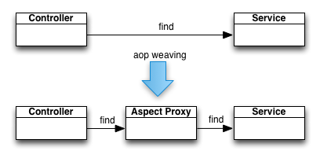

Spring AOP (Aspect Oriented Programming)
Spring AOP (Aspect Oriented Programming)
Introduction
La programmation orientée aspect est une technique de factorisation du code.
Une module (un aspect) peut être injecté à différents endroits dans une application.
Ces apects sont des morceaux de logique (concerns) qui sont souvent orthogonaux à l'éxecution de l'application.
Le logging est l'exemple par excellence. On peut aussi citer la sécurité et la gestion des transactions.
Branche git
On crée la branche aop à partir de la branche master.
> git checkout master Switched to branch 'master' > git checkout -b aop Switched to a new branch 'aop'
Un exemple simple
L'exemple canonique de l'AOP est le logging.
Admettons que nous souhaitions avoir un log aux entrées et sorties des méthodes dans nos services.
public void doSomething() {
log.trace("Entering in doSomething()");
...
log.trace("Leaving doSomething()");
}
Imaginons que nous ayons des centaines des services et dons des milliers de méthodes : )
Il n'y a pas de mécanisme en programmation objet afin de faire cela simplement.
L'AOP prend donc le problème à l'envers : on isole le logging dans un aspect et on l'applique partout.
public void aFaireAutourDeLa(Method method) {
log.trace("Entering in " + method.getSignature());
method.call();
log.trace("Leaving " + method.getSignature());
}
Il reste donc a savoir comment faire en pratique.
Aspectj
Avec spring, nous allons utiliser aspectj, qui est la librairie de référence pour l'AOP en java.
L'action d'injecter des aspects est appelée weaving
En java, il existe 3 façons de le faire :
- compile time : à la compilation
- load time : au chargement des classes
- runtime : pendant l'exécution
Nous allons le faire au runtime, cela offre moins de possibilité mais c'est plus simple à mettre en place.
La détection d'aspects est activée avec la configuration spring suivante.
<!-- Support d'aspectj --> <aop:aspectj-autoproxy/>
Il faut aussi ajouter la librairie spring-aop
<dependency> <groupId>org.springframework</groupId> <artifactId>spring-aop</artifactId> <version>3.1.2.RELEASE</version> <scope>compile</scope> </dependency>
Et aspectj
<dependency> <groupId>org.aspectj</groupId> <artifactId>aspectjweaver</artifactId> <version>1.6.12</version> <scope>compile</scope> </dependency> <dependency> <groupId>org.aspectj</groupId> <artifactId>aspectjrt</artifactId> <version>1.6.12</version> <scope>compile</scope> </dependency>
Et cglib (librairie de manipulation de byte code)
<dependency> <groupId>cglib</groupId> <artifactId>cglib</artifactId> <version>2.2.2</version> <scope>compile</scope> </dependency>
Un aspect simple
Nous créons le package fr.todooz.aop et on l'ajoute au component scan
<context:component-scan base-package="fr.todooz.aop"/>
Voici un aspect qui affiche le temps d'exécution de chaque méthode.
@Aspect
@Component
public class TraceAspect {
@Around("within(fr.todooz..*)")
public Object trace(ProceedingJoinPoint pjp) throws Throwable {
long t1 = System.currentTimeMillis();
Object value = pjp.proceed();
long t2 = System.currentTimeMillis();
System.out.println("Executed " + pjp.getSignature() + " in " + (t2 - t1) + "ms");
return value;
}
}
L'aspect est un composant spring.
@Aspect indique que le composant est un aspect.
@Around indique que notre aspect doit s'exécuter autour des méthodes des classes de fr.todooz.
ProceedingJoinPoint est un objet qui décrit l'appel en cours.
Avec cette aspect en place, on obtient le log suivant lors de l'appel de http://localhost:8080/index.
Executed TagCloud fr.todooz.service.TagCloudService.buildTagCloud() in 119ms Executed TagCloud fr.todooz.web.controller.IndexController.tagCloud() in 139ms Executed List fr.todooz.service.TaskService.findAll() in 3ms Executed String fr.todooz.web.controller.IndexController.index(Model) in 3ms
En modifiant la règle de matching, on peut atteindre du code des librairies
@Around("within(org.hibernate..*)")
Donne
Executed Session org.hibernate.SessionFactory.openSession() in 0ms Executed Session org.hibernate.SessionFactory.getCurrentSession() in 0ms Executed Session org.hibernate.SessionFactory.openSession() in 0ms Executed Session org.hibernate.SessionFactory.getCurrentSession() in 0ms
Assez efficace pour quelques lignes de codes.
Mécanique runtime
Pour rendre possible l'AOP au runtime, spring utilise une technique simple : il intercale un proxy entre l'appelant et la cible.
Au runtime, il n'est donc possible de faire de l'AOP qui si il y a un appel de méthode.
En conséquence, seule les méthodes publiques peuvent être concernées, ce qui est généralement suffisant.
Pour plus de possibilités, il faut se tourner vers le weaving au moment de la compilation.
Pour faire un proxy java, il existe 2 méthodes :
- La mécanique java standard : il faut que la classe cible implémente une interface
- La manipulation de bytecode (ce que fait cglib) : peut s'appliquer à toutes les classes
@Transactional
Une simple annotation avec spring et une méthode devient transactionnelle.
La technique utilisée est la même : spring ajoute un proxy qui va suivre la transaction.
La prise en compte de @Transactional ne nécessite ni aspectj ni cglib.
Spring utilise la mécanique standard java qui permet de faire un proxy à partir d'une interface.
- Le service annoté doit donc hériter ses methodes d'une interface.
- Seules les méthodes de l'interface (publiques par nature) peuvent être annotées.
Spring a donc nativement des capacités d'AOP mais elle sont limitées.
Lexique
Les termes liés à l'AOP sont complexes mais bien établis.
- Aspect : un module contenant le code qui pourra être injecté
- Cross cutting : Découpage de d'éléments réutilisables orthogonaux à l'application
- join point : un point d'exécution de l'application pendant lequel un aspect peut être injecté
- Advice : type d'injection pour un point d'exécution. Par exemple : around, before, after, exception...
- Pointcut : un prédicat qui permet de désigner des join points.
- Target object : l'objet qui va être altéré pas l'injection d'aspects.
- AOP proxy : objet injecté entre l'appelant et la cible afin d'implémenter la mécanique AOP.
- Weaving : action d'injecter les aspects en respectant les pointcuts et advices.
En pratique, la connaissance des termes n'est pas un pré requis à faire de l'AOP.
Aspects et annotations
Les aspects n'ont pas de rapport direct avec les annotations.
Cependant, il est possible d'utiliser les annotations comme prédicats (pointcut).
Il me suffit alors d'annoter un élément afin d'injecter un aspect (à la façon de @Transational).
Cachons nous
La problématique de cache est un élément d'une application facile à impléménter via AOP.
Nous allons ajouter les mécaniques suivantes :
- Ajouter un cache aux méthodes findAll, findByQuery, findByTag, findByInterval et count du TaskService.
- Lorsque que les méthodes save et delete sont appelées, le cache doit être vidé (flush).
Nous allons utiliser ehcache comme librairie de cache.
<dependency> <groupId>net.sf.ehcache</groupId> <artifactId>ehcache-core</artifactId> <version>2.4.6</version> <scope>compile</scope> </dependency>
Son utilisation est simple. Elle est même capable de devenir distribuée au travers de terracotta
La configuration spring
<bean id="cacheManager" class="org.springframework.cache.ehcache.EhCacheManagerFactoryBean"> <property name="configLocation" value="/WEB-INF/ehcache.xml" /> </bean> <bean id="tasksCache" class="org.springframework.cache.ehcache.EhCacheFactoryBean"> <property name="cacheManager" ref="cacheManager" /> <property name="cacheName" value="tasksCache" /> </bean>
Et le fichier WEB-INF/ehcache.xml associé
<ehcache>
<defaultCache maxElementsInMemory="500" eternal="true" overflowToDisk="false" memoryStoreEvictionPolicy="LFU"/>
<cache name="tasksCache" maxElementsInMemory="500" eternal="true" overflowToDisk="false"
memoryStoreEvictionPolicy="LRU"/>
</ehcache>
Nous avons donc maintenant un cache tasksCache disponible.
Nous définissons 2 annotations dans le package fr.todooz.annotation
@Retention(RetentionPolicy.RUNTIME)
@Target(ElementType.METHOD)
public @interface UseCache {
}
@Retention(RetentionPolicy.RUNTIME)
@Target(ElementType.METHOD)
public @interface FlushCache {
}
Elles nous servent a annoter les méthodes du TaskServiceImpl
@UseCache
public List<Task> findAll() {
...
}
Il nous faut alors définir notre Aspect.
@Aspect
@Component
public class CacheAspect {
@Inject
private Ehcache postsCache;
@Around("@annotation(useCache)")
public Object cache(ProceedingJoinPoint pjp, UseCache useCache) throws Throwable {
// ?
return pjp.proceed();
}
@Around("@annotation(flushCache)")
public Object flush(ProceedingJoinPoint pjp, FlushCache flushCache) throws Throwable {
// ?
return pjp.proceed();
}
private class CacheKey {
private String signature;
private Object[] args;
public CacheKey(ProceedingJoinPoint pjp) {
signature = pjp.getSignature().toString();
args = pjp.getArgs();
}
@Override
public boolean equals(Object o) {
if (this == o) return true;
if (o == null || getClass() != o.getClass()) return false;
CacheKey cacheKey = (CacheKey) o;
// Probably incorrect - comparing Object[] arrays with Arrays.equals
if (!Arrays.equals(args, cacheKey.args)) return false;
if (signature != null ? !signature.equals(cacheKey.signature) : cacheKey.signature != null) return false;
return true;
}
@Override
public int hashCode() {
int result = signature != null ? signature.hashCode() : 0;
result = 31 * result + (args != null ? Arrays.hashCode(args) : 0);
return result;
}
}
}
Proposer une implémentation pour ces 2 méthodes.
Oui mais...
Ce que nous avons mis en place est simple et peut évoluer facilement.
Mais depuis peu, spring propose une abstraction pour le cache
Elle propose ce que nous venons d'implémenter en beaucoup plus souple.